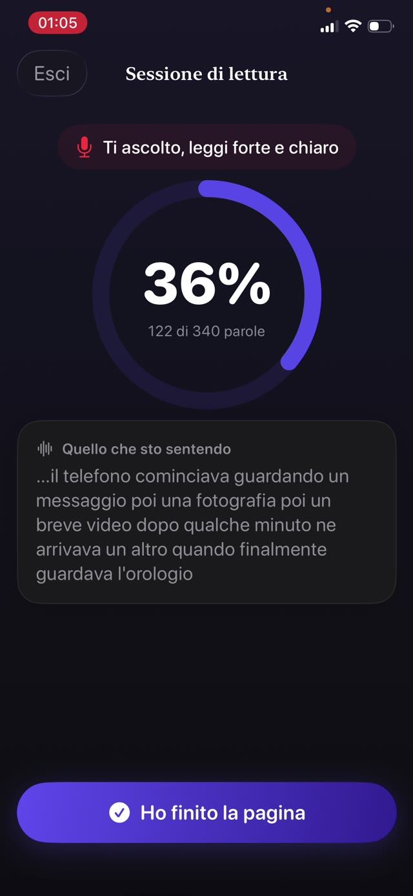

Conta perché è il ponte tra decodifica e comprensione. Un bambino che spende tutta l'attenzione nel comporre le parole non ne ha più per il senso della frase. L'esercizio che la costruisce è semplice, vecchio e un po' fuori moda: leggere ad alta voce, quasi tutti i giorni, per una decina di minuti.


Le tre parti della fluidità
- Accuratezza. Leggere le parole che ci sono davvero sulla pagina, non quelle che la forma suggerisce.
- Ritmo. Un ritmo da conversazione. Troppo lento spezza la frase; correre di solito significa che la comprensione è stata lasciata indietro.
- Espressione. Intonazione e scansione: fermarsi alle virgole, alzare la voce per una domanda, dare una voce a un personaggio. È la parte che dimostra la comprensione.
Perché ad alta voce, e perché a te
La lettura silenziosa nasconde tutto. Un bambino può muovere gli occhi su una pagina per dieci minuti e non assorbire niente, e nessuno dei due se ne accorgerebbe.
Leggere ad alta voce rende il processo udibile. Senti le parole che salta, quelle che indovina dalla prima lettera, i punti in cui la frase si sfalda. È anche l'unica versione in cui un errore si coglie nel momento in cui succede.
La routine di dieci minuti
- Scegli un libro appena sotto il suo livello di frustrazione. L'allenamento alla fluidità vuole un testo che riesca a leggere quasi tutto, non uno che gli si oppone.
- Metti un timer di dieci minuti, così la fine è definita e non negoziabile.
- Fallo leggere ad alta voce. Siediti abbastanza vicino da sentire, e resisti alla tentazione di riempire i silenzi.
- Annota gli errori senza interrompere a metà frase, a meno che il senso non si perda.
- Alla fine, fai una domanda vera su cosa è successo. Una. Non un quiz.
Come correggere senza rovinare tutto
L'istinto è saltare su ogni errore. Non farlo. La correzione continua trasforma la lettura in una prova con voto, e i bambini si tirano fuori dalle cose in cui vengono valutati.
Aspetta la fine della frase. Se il senso è sopravvissuto all'errore, lascia perdere. Se non è sopravvissuto, di' la parola e vai avanti senza spiegazioni. Le spiegazioni vengono dopo, e soprattutto per gli errori che si ripetono.
Seguire i progressi senza cronometro
Le parole al minuto sono ciò che misurano le scuole, ed è una cosa da non inseguire a casa; i bambini cronometrati imparano a correre. Quello che vuoi vedere nell'arco delle settimane è una scansione più sciolta, meno inciampi sulle stesse parole e più espressione.
Basta un semplice registro di cosa è stato letto e quando. Ti dice se l'esercizio sta davvero avvenendo, che è la variabile che conta di più.
Un allenamento che tiene il registro da sé
Guardian Reader ascolta mentre tuo figlio legge ad alta voce le pagine scansionate e confronta ciò che sente con il loro testo esatto, mostrando la corrispondenza in diretta. La soglia è regolabile, quindi un bambino che sta imparando a leggere non viene misurato con il metro di un adolescente.
Ogni sessione viene salvata con la data, i minuti, le pagine e le parole davvero lette, e ne esce un quadro onesto dell'esercizio lungo l'anno scolastico, senza che nessuno compili una tabella.
La lettura sblocca lo schermo.
Gratis · Nessun account, nessun tracciamento
Scarica Guardian Reader per iPhone